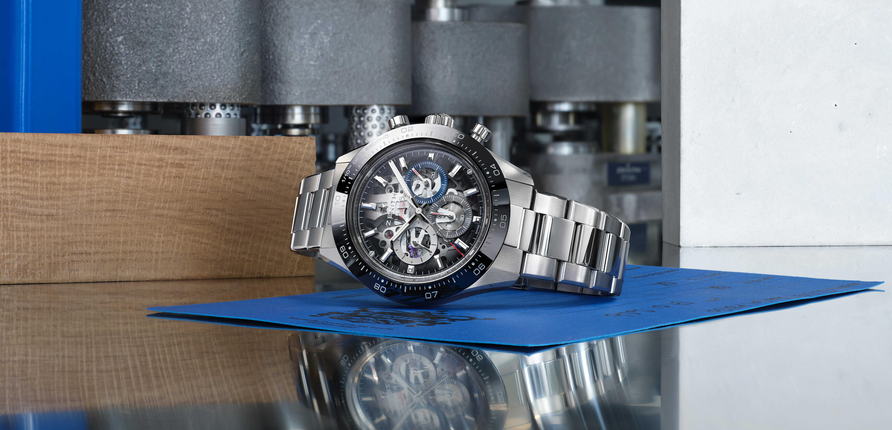
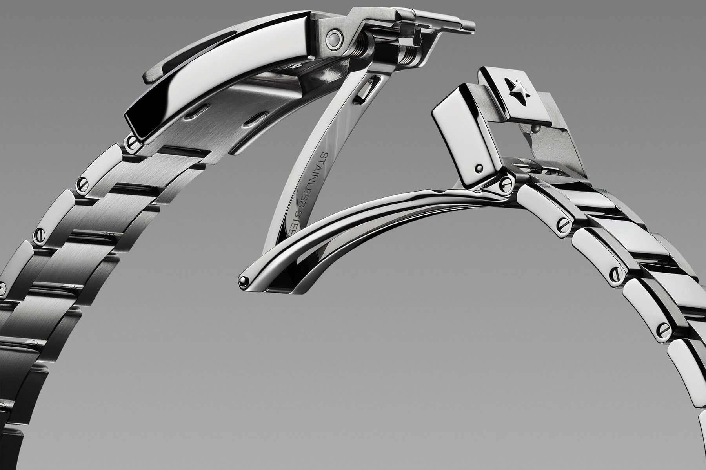
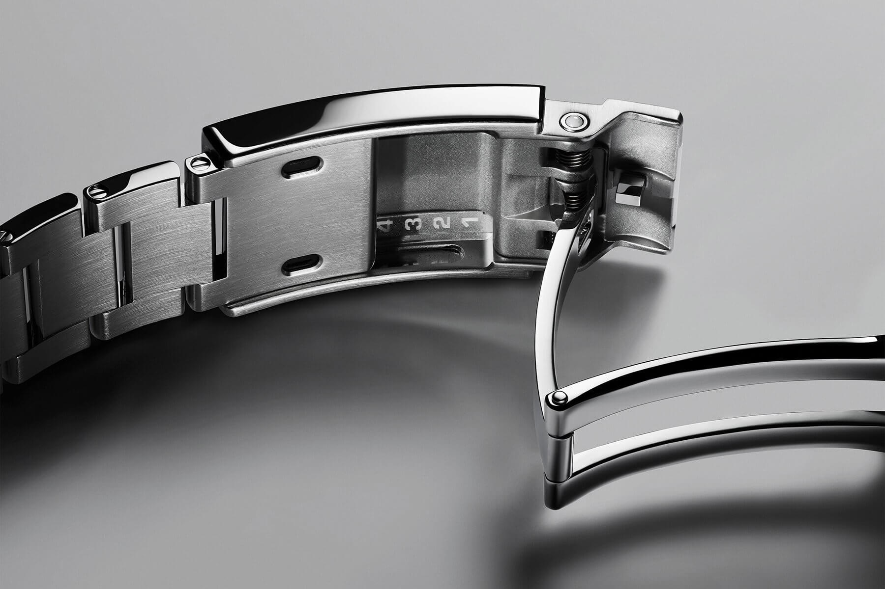
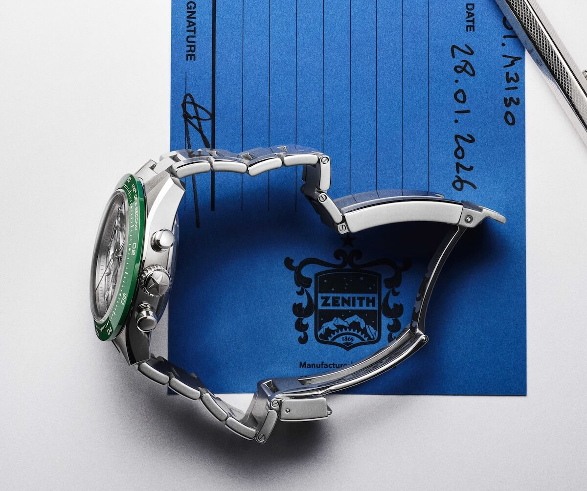

A Closer Look at the ZENCLASP™, a New and Improved Folding Clasp by ZENITH
A little while ago we rounded up some of the best straps and bracelets from Watches and Wonders 2026, and one release kept nagging at me long after I closed the tab. So this time I'm zooming all the way in on a single piece of hardware: the new folding clasp by Zenith, the ZENCLASP™.
 Nenad Pantelic • May 5, 2026
Nenad Pantelic • May 5, 2026

Why the clasp is worth an entire article?
It is easy to obsess over dials, movements, and case materials and forget that the part of a watch on a bracelet you interact with most is probably the clasp. You open and close it every single day. You feel it against the back of your wrist for hours at a time. When it is bad, no amount of dial and movement brilliance can save the experience. When it is good, you stop thinking about it entirely, which is exactly the point.
Zenith clearly agrees, because for 2026 the company introduced a clasp it considered worthy of three years of development. It is called the ZENCLASP™, and it makes a debut on the stainless steel Chronomaster Sport Skeleton.
Refined Where It Counts
The previous clasp on the Chronomaster Sport was secure, but actually opening was a struggle. The safety latch had a recessed notch, yet the main folding element gave you almost nothing to grab onto. The instinctive motion that works on most folding clasps simply failed here, and more than one fingernail has been sacrificed to it over the years.
The ZENCLASP™ addresses this directly. Smooth, rounded edges and improved articulation mean the folding section now releases cleanly and confidently. It is the kind of fix that looks minor on paper but completely changes how you feel about reaching for the watch in the morning.

On-the-fly micro-adjustment
The headline feature for me is the micro-adjustment system. Lift a secondary cover on the underside of the clasp and the bracelet slides in 2.5mm increments across five positions, for a total adjustment range of 10mm. Crucially, it is all tool-free and can be done directly on the wrist, without taking the watch off.
That matters more than it sounds. Wrists swell and shrink throughout the day with heat, exercise, and altitude, and a 10mm range lets the bracelet follow along. It also means the bracelet can ditch the side adjustment holes that plague so many designs. The result simply looks cleaner and feels more premium. Micro-adjustable clasps are increasingly common, but this execution feels especially considered.

Security and ceramic elements
Comfort is only half the story. A clasp also has to lock down and stay locked. The ZENCLASP™ is secured by a lift-up safety cover decorated with the Zenith star, and the closing system is reinforced by ceramic ball components. Those ceramic balls do two jobs: they ensure accurate locking, and they preserve the exact relative positioning of the internal elements over time. This means the action stays crisp rather than going loose and rattly after a few years.
The numbers behind it
This is where my inner geek lights up. The ZENCLASP™ is built from 41 individual components, including 10 ceramic balls handling the locking and positioning functions. Zenith says development took three years, or roughly 1,800 hours of research, engineering, and optimization.
Durability was validated through real-life testing equivalent to more than 10 years of use, which works out to over 600,000 cumulative opening and closing cycles.

Rollout and compatibility
For now the ZENCLASP™ is exclusive to the stainless steel Chronomaster Sport Skeleton models. Zenith plans a gradual rollout across the wider Chronomaster Sport range, including two-tone, gold, and titanium versions.
The best news is compatibility. The new clasp is designed to fit previous Chronomaster Sport references going back to 2021, so existing owners can potentially modernize their watches. If that's you, it's worth talking to a Zenith boutique or authorized dealer, though pricing for conversion kits hasn't been confirmed yet.
True pioneers, if you ask me
I want to give credit where it is due. It would have been easy for Zenith to leave the clasp alone and let the smoky sapphire dial do the talking. Instead they poured three years, 1,800 hours, and 600,000 test cycles into the one component most of the industry ignores.
It is rare to see a company pour real time and money into innovating bracelet design, construction, and wearability, rather than just the parts that photograph well and get likes on Instagram. By taking this unglamorous, almost invisible part of the watch so seriously, Zenith deserves high praise and recognition. They are true pioneers, if you ask me.